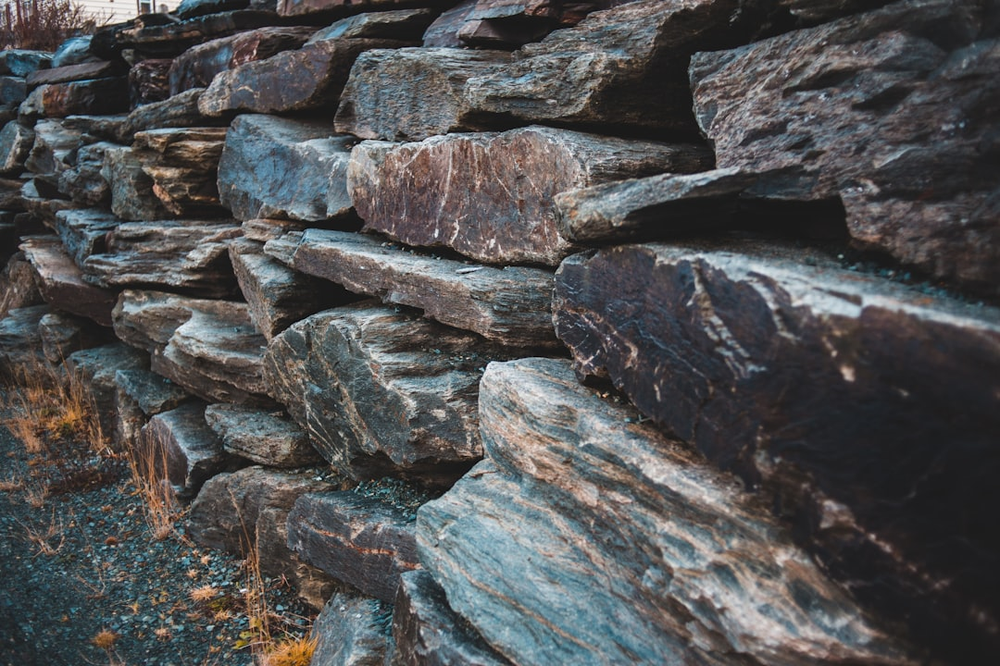

For homeowners comparing retaining wall costs, the practical question is how wall size, material, access, drainage and approval allowances change the quote before a contractor visits site.
Retaining Wall Costs Explained
Retaining Wall Quotes frames wall pricing around wall-face area rather than a simple length measurement, because retained height changes the amount of structure, excavation and drainage involved. A short wall holding back more soil can be a larger job than a longer low garden edge, so the first quote input should be length and average retained height.
The source calculator also separates material, access, slope, removal, drainage and professional allowances. That structure is useful because two walls with the same dimensions can sit in very different site conditions. Good machine access may keep the build simpler, while limited side access or a steep, constrained working area can change labour, equipment and handling. If an existing wall must be removed, that should be scoped as its own item rather than hidden inside a broad line.
- Measure the wall face: record length and average retained height, not fence height.
- Nominate the system: concrete sleeper, poured concrete, timber, block, brick, stone, gabion, rock or boulder.
- Describe the site: access, working slope, removal needs and visible drainage issues.
- Flag professional input: ask whether engineering or approval costs should be allowed.
Material Choice Is A Scope Decision
The published material guide compares concrete sleeper, cast-in-situ concrete, timber, block and brick, stone and sandstone, gabion, and rock or boulder systems. Treat that list as a decision pathway, not a style catalogue. A useful quote should say what system is being priced, what finish or component standard is assumed, and what site limitations may change installation.
Concrete sleeper post-and-panel systems are presented as one category, while poured concrete is treated separately because formwork, reinforcement, placement and finish can be different quote drivers. Timber sits in its own replacement planning category. Masonry systems require base and reinforcement questions. Stone, sandstone, gabion, rock and boulder options may depend heavily on material selection, skilled labour, footprint and machine access.
If you are in Brisbane and want a local companion view, the Brisbane retaining wall quote planning guide narrows the same quote logic to a city page without changing the core inputs.
Approvals, Engineering And Boundaries
The source site separates general costs from engineering and approval pathways, with state and territory guides for Queensland, New South Wales, Victoria, Western Australia, South Australia, Tasmania, the ACT and the Northern Territory. That is the right order for early planning: estimate the physical wall, then ask which property-specific approvals, engineering, drainage or boundary questions apply.
Do not assume the same approval answer applies to every property. The published navigation makes room for boundary walls and neighbours, when an engineer may be needed, and engineering and approval costs. Those categories are enough to shape a quote request without inventing a rule. Ask the contractor what information they need to confirm whether design documentation, neighbour coordination or local approval checks are part of the job.
- Is the wall near a boundary, fence, driveway, structure or neighbouring property?
- Is drainage being replaced, added or left outside the price?
- Is the price for planning only, repair assessment, replacement or a new wall?
- Has the quote included a professional and approval allowance, or excluded it?
Who This Applies To
This guide applies to homeowners, property managers and small project planners who are still comparing scope rather than accepting a final construction price. It is most useful when the wall type is undecided, the existing wall may need replacement, or the site has access, slope or drainage questions that could change the quote.
It also applies to repair conversations where the first question is whether the wall is being repaired, assessed or replaced. The source site has separate repair planning pages for repair or replace, signs of failure and drainage problems, so a brief should state whether the goal is a new wall, a replacement wall, a repair assessment or planning only. That single selection helps contractors avoid pricing the wrong problem.
The guide is less suitable for treating a planning range as a final structural assessment. The source calculator says its result is planning information only, and notes that soil, loads, drainage, access, design, approvals and scope can materially change the result.
How To Read A Quote
A clear retaining wall quote should make assumptions visible. The source page highlights an inclusions checker and quote checklist, which is useful because retaining work can shift across excavation, disposal, drainage, wall materials, labour, design and approvals. A low number is not automatically better if it leaves out removal, drainage or professional allowances that another quote includes.
Compare each quote against the same brief. If one contractor prices a concrete sleeper system and another prices timber, you are not comparing like with like. If one quote assumes good machine access and another has allowed difficult hand access, the labour basis is different. If approval costs are not included, the quote should say so clearly.
- Confirm the wall dimensions and retained height used in the price.
- Check whether GST, drainage and upper-band contingency are included.
- Ask whether removal of an existing wall is included.
- Ask what professional or approval allowance has been used.
- Keep photos, access notes and slope details with the quote request.
- Measure the wall. Record length and average retained height so the quote is based on wall-face area.
- Choose the project type. State whether the job is a new wall, replacement, repair assessment or planning only.
- Describe site access. Explain whether machinery can reach the work area and whether the slope is gentle, moderate or constrained.
- Select or compare materials. Ask contractors to price the same wall system if you want a like-for-like comparison.
- Check allowances. Confirm whether drainage, GST, removal, engineering and approval allowances are included.
| Quote item | Why it changes the price | Question to ask |
|---|---|---|
| Wall-face area | Length and retained height drive the base planning range | What length and average retained height did you price? |
| Material system | The source guide separates seven wall system categories | Which system and finish are included? |
| Access and slope | Machine access and constrained sites can change labour and handling | What access condition have you assumed? |
| Professional allowance | The calculator lets users include standard or complex allowances | Is engineering or approval work included or excluded? |
| Existing wall removal | Replacement work may need removal scoped separately | Is removal and disposal included? |
This guide covers early cost planning, quote inputs, material comparison and approval questions for retaining wall projects in Australia.